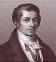

Jan
Baptiste Say

J.B.Say
(1767-1822)
sostiene con la “legge degli sbocchi” che
l’offerta crea la propria domanda e quindi il sistema economico
tende, nel lungo periodo, spontaneamente all’equilibrio e al
pieno impiego delle risorse (qualunque crisi di sovrapproduzione o di
disoccupazione sono temporanee). Jan Baptiste Say si presenta come un
continuatore di Adam Smith anche se in pratica snatura quasi
completamente la teoria smithiana. Ispirandosi a Condillac, nella sua
opera Traité d’ économie politique
(1803), respinge la distinzione tra valore d’uso e valore
di scambio, dichiarando che il valore degli oggetti sul mercato
«è la misura dell’utilità che è
stata loro conferita». Egli si rifiuta perciò di
ammettere che la produzione debba essere studiata e analizzata come
quel processo per cui il lavoro dell’uomo prepara gli oggetti
in vista del consumo.Questa tesi lo conduce a formulare la teoria
(oggi ancora adottata da molti) che la produzione si realizza grazie
al concorso di tre elementi, dei tre «fattori della
produzione» e cioè del lavoro del capitale e degli
agenti naturali. A proposito degli agenti naturali, Say osserva che
l’economista deve prestar attenzione solo a quello che risulta
appropriato, ossia alla terra, poiché gli altri sono
dati gratuitamente. Ciascuno di questi elementi indispensabili, ossia
ogni singolo fattore di produzione, apporta il concorso dei suoi
«servizi produttivi» ai dirigenti delle imprese e
ne riceve in cambio un reddito, che è appunto il prezzo dei
suddetti servizi. L’analisi della formazione dei redditi
viene ad assumere, allora, una configurazione assolutamente nuova.
I salari, i profitti, le rendite fondiarie sono
i prezzi di servizi ben definiti e si determinano in funzione
dell’offerta e della domanda che di essi vengono fatte.